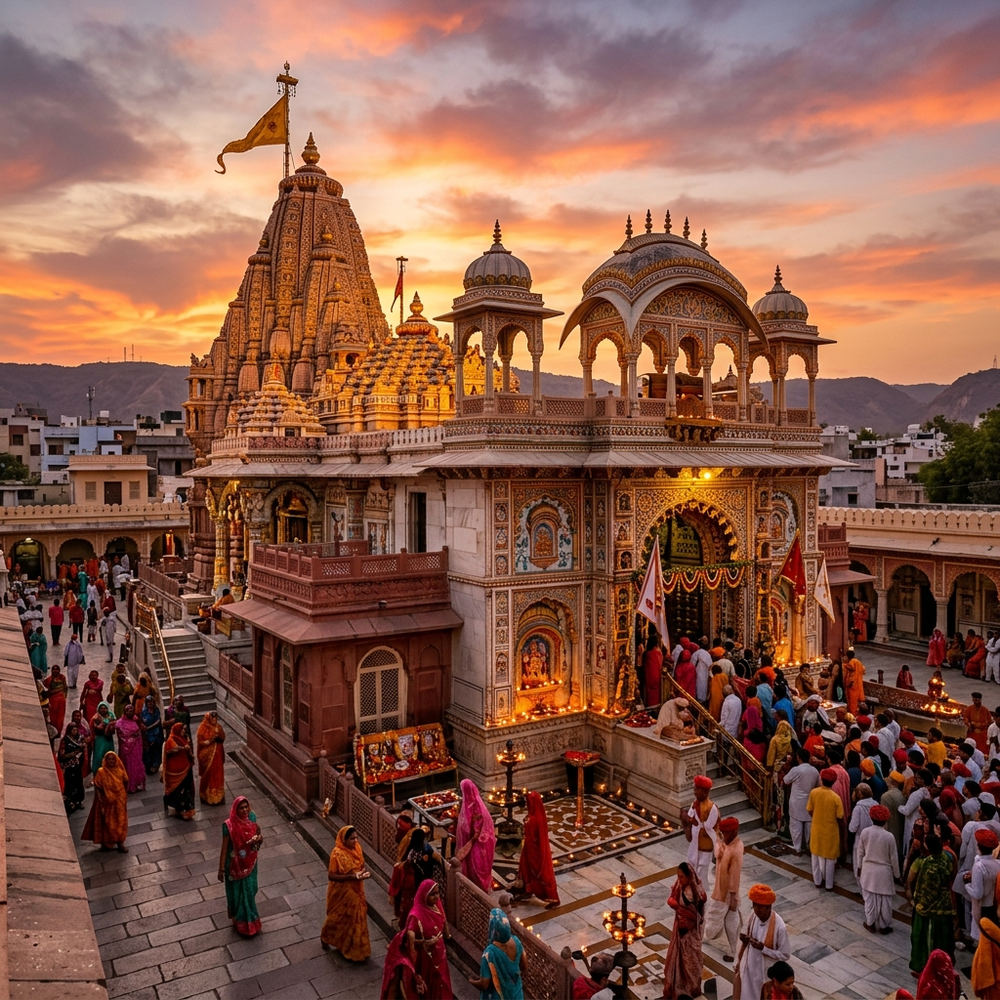

Akshardham New Delhi
New Delhi
The Sacred Legacy

The Akshardham temple in New Delhi holds the Guinness World Record for the world's largest comprehensive Hindu temple covering 30 acres with the main monument soaring 43 metres high and spanning 96 metres wide. Built by 11,000 artisans over 5 years using 600 tonnes of pink Rajasthani sandstone and Italian Carrara marble (with no steel or concrete), Akshardham was inaugurated in November 2005 and immediately transformed Delhi's spiritual and tourist landscape.
The monument is a culmination of 10,000 years of Hindu art, architecture, and values featuring 20,000 hand-carved figures, 234 ornate pillars, 9 ornate domes, and 148 massive architectural elephants. The entire structure was designed according to ancient Vastu Shastra and Pancharatra Shastra architectural principles. Akshardham is not just a temple but a complete cultural complex with a boat ride through 10,000 years of Indian civilization, a large-format IMAX theatre, an elaborate musical fountain show, and beautifully landscaped gardens.
Architectural Marvel
The pink sandstone monument features the largest stone carving of elephants in the world (148 life-size elephants totalling 3,000 tonnes of stone), 234 decorated pillars, 20,000 carved forms of deities, saints, and divine beings, and 9 domes of varying sizes. No steel or concrete was used only interlocked pink sandstone and Italian marble designed to last 1,000 years.
Sahaj Anand Journey
The boat ride through Sahaj Anand Water Show is a 12-minute journey through 10,000 years of India's spiritual, scientific, and cultural history re-enacted through dioramas, animatronics, and immersive storytelling. This extraordinary cultural experience introduces visitors to India's contributions to mathematics, surgery, philosophy, and the arts in an emotionally engaging format.
Musical Fountain
The Sahaj Anand Water Show (evenings) is a spectacular 24-minute multimedia performance combining water jets, fire, music, lights, and narration to retell the story of a young seeker finding the purpose of life inspired by the Mundaka Upanishad. The show draws 5,000+ viewers nightly and is considered one of India's finest multimedia presentations.
Nilkanth Darbar
The main sanctum houses a magnificent gold-plated idol of Swaminarayan (Nilkanth Varni) flanked by his divine successors. The experience of walking from the bright outer monument into the dimly lit, incense-filled, devotion-charged inner sanctum is a genuine shift in consciousness from the world of aesthetics into the world of the sacred.
We did not build Akshardham to impress you with our architecture. We built it to remind you of what you have forgotten that your own innermost self is the greatest marvel in the universe, and every beauty here is merely a reflection of that inner truth. Pramukh Swami Maharaj, BAPS
How to Reach
IGI Airport 0 km
Flights from all major cities
Akshardham Station (Blue Line) 200m walk (direct access)
On NH24, near Noida Link Road
DTC buses from all Delhi zones
October to March
Closed Mondays